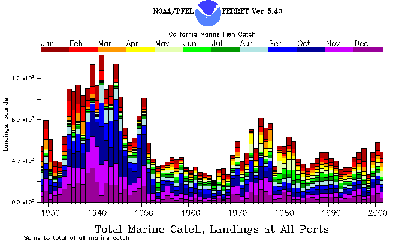

California Commercial Landings
About
California Commercial Landings Database
This database (Mason (2004)) includes only fish and invertebrates caught off California and landed in California. It includes neither offshore foreign fisheries landed outside California, nor tropical tuna fisheries landed in California. It does include commercial freshwater catches in California through but not after 1971. It includes some but not all maricultured shellfish such as oysters through 1980. It has spatial resolution only to the extent that fish caught off California and landed in a port region were presumed to be caught in that region. This assumption may not be valid for boats traveling long distances to fish.

Geographic Regions
Only landings caught off California appear in this data series, not landings of species caught north or south of the state boundaries.
These are the 6 regions we have used throughout the time series: - Eureka (Del Norte, Humbolt and Mendocino Counties) - San Francisco (Sonoma, Marin, San Mateo, and San Francisco Counties, San Francisco Bay) - Monterey (Santa Cruz and Monterey Counties) - Santa Barbara (San Luis Obispo Santa Barbara and Ventura Counties) - Los Angeles (Los Angeles and Orange Counties) - San Diego (San Diego County)
The only region that is not consistent is San Francisco. Landings from a 7th region called Sacramento were combined with San Francisco in our tables from 1928 to 1971. Sacramento region included landings from San Pablo and Susuin Bays, Sacramento and San Joaquin Rivers and Delta and inland lakes. Sacramento region also included river caught salmon and some marine fish (primarily sardine) caught in the San Francisco marine region but transported to Sacramento canneries from 1931 to 1950. This plus the merger of Sacramento landings with San Francisco in published tables after the Sacramento River closed to gill nets in Sept 1957, led to our including Sacramento in the San Francisco landings. Sacramento landings and freshwater species in general are not in our data series from 1972 onward.
Species Names and Grouping
Landings can be accessed using two different lists. The short list of 57 names combines some later categories to match the earlier groupings to produce as many long time series as possible. The long list of 336 names, on the other hand, tries to maximize the distinction of different species.
Common names are used for types of fish sold to fish markets in California, also called market categories. More than one species may be present in a market category. If the species are known, they will be listed in the information about that market category. The number of categories has increased over time as more species were separated by the markets. Categories for rockfish are particularly mixed.
Short list of names
The following short list of 57 names combines some later categories to match the earlier groupings to produce as many long time series as possible (i.e. sole on the short list includes all species that were grouped together before 1953, even those species sold seperately after 1953). The short list does not include some less abundant categories and does not sum to the total California landings.
| Species | Grouping | Description |
|---|---|---|
| CRAB, DUNGENESS | Crustatcean | All crabs landed as market crab or Dungeness crab, includes some rock crabs from Santa Barbara south. |
| CRAB, ROCK | Crustatcean | All crabs landed in any of the rock crab categories (not differentiated until 1995). |
| LOBSTER, CALIFORNIA SPINY | Crustatcean | All lobster called either California spiny or Pacific spiny lobster. |
| PRAWN | Crustatcean | All types of prawns landed |
| SHRIMP, BAY | Crustatcean | Almost all shrimp before 1952 were bay shrimp from SF Bay, separate category after 1951 |
| SHRIMP, PACIFIC OCEAN | Crustatcean | Fishery on Pacific Ocean shrimp began in 1952. |
| CUCUMBER, SEA | Echinoderm | California and warty sea cucumbers. Sea cucumber fishery began 1978. |
| URCHIN | Echinoderm | All types of sea urchins but primarioy red sea urchin. |
| BLACKFISH, SACRAMENTO | Fish, Freshwater | Freshwater fish Included with hardhead until 1969, also called greaser Orthodon microlepidotus (Fish Bulletin 74, p47.). |
| CARP | Fish, Freshwater | All carp landed until 1971, some large quantities remove from Clear Lake 1931-36, Cyprinus carpio. |
| CATFISH | Fish, Freshwater | All freshwater catfish landed, includes Forktail or channel catfish (Ictalurus catus) and and square-tail,Sacramento catfish or bullhead (Ameiurus nebulosus) |
| HARDHEAD | Fish, Freshwater | All freshwater fish landed as hard head Mylopharodon conocephalus, includes blackfish in most years. |
| PIKEMINNOW, SACRAMENTO | Fish, Freshwater | All freshwater fish landed as pike Ptychocheilus grandis (not true pike) (1928-1951) |
| SPLIT-TAIL | Fish, Freshwater | All freshwater fish landed as split-tail, Pogonichtys macrolepidotus 1928-67) |
| ANCHOVY, NORTHERN | Fish, Marine and Anadromous | All fish landed as anchovy EXCEPT deepbody anchovy and slough anchovy |
| BARRACUDA, CALIFORNIA | Fish, Marine and Anadromous | All fish landed as barracuda |
| BASS, GIANT SEA | Fish, Marine and Anadromous | All fish landed as black seabass (1928-1960) or giant seabass (1961) |
| BASS, ROCK | Fish, Marine and Anadromous | Group name includes kelp bass, barred sand bass, and spotted sand bass |
| BONITO, PACIFIC | Fish, Marine and Anadromous | All fish landed as bonito or bonito tuna |
| CABEZON | Fish, Marine and Anadromous | All fish landed as cabezon |
| CROAKER, WHITE | Fish, Marine and Anadromous | All fish landed as king fish or croaker or as queenfish, which was included with white croaker through 1971 |
| FLOUNDER | Fish, Marine and Anadromous | All fish landed as flounder or as starry flounder, but NOT arrowtooth flounder which was included with sole before 1951 |
| FLYINGFISH | Fish, Marine and Anadromous | All fish landed as flyingfish |
| GREENLING, KELP | Fish, Marine and Anadromous | All fish landed as kelp greenling or as greenling |
| GRENADIERS | Fish, Marine and Anadromous | All fish landed as grenadiers after 1971, they were part of the miscellaneous trawl category through 1971 |
| HALIBUT, CALIFORNIA | Fish, Marine and Anadromous | Fish landed as California halibut, possible mixing of Pacific with California halibut, see Fish Bulletin 74, p75. 1947 |
| HERRING, PACIFIC | Fish, Marine and Anadromous | All fish landed as Pacific herring or as herring roe (meaning herring containing roe), not round herring |
| LINGCOD | Fish, Marine and Anadromous | All fish landed as lingcod, called Pacific cultus before 1947. |
| MACKEREL, JACK | Fish, Marine and Anadromous | All fish landed as jack mackerel, plus proportion based on sampling of unspecified mackerel 1977-85. |
| MACKEREL, PACIFIC (CHUB) | Fish, Marine and Anadromous | All fish landed as Pacific mackerel, plus proportion based on sampling of unspecified mackerel 1977-85 |
| MACKEREL, UNSPECIFIED | Fish, Marine and Anadromous | All fish landed as mackerel from 1978-80, plus later mackerel landings if not identified by species on fish receipt or by sampling |
| PERCH | Fish, Marine and Anadromous | Mixed species group containing just surfperches in northern Calif, but in southern Calif. also including blacksmith, halfmoon, opaleye and zebraperch - separable after 1976 |
| ROCKFISH | Fish, Marine and Anadromous | Mixed species group containing all species of rockfish (plus thornyheads until 1977) |
| SABLEFISH | Fish, Marine and Anadromous | All fish landed as sablefish or blackcod |
| SALMON | Fish, Marine and Anadromous | All fish landed as salmon including, king or chinook, silver or coho, pink, and chum - separable after 1976 |
| SANDDAB | Fish, Marine and Anadromous | All fish landed as sanddabs, including Pacific, longfin and speckeled |
| SARDINE, PACIFIC | Fish, Marine and Anadromous | All fish landed in California as sardine, some were mixed with mackerel schools and calculated from sampling 1981 |
| SCORPIONFISH, CALIFORNIA | Fish, Marine and Anadromous | All fish landed as scorpionfish or as sculpin used as common name for scorpionfish until 1978 |
| SHARK | Fish, Marine and Anadromous | All fish landed under various shark names separable from 1977 on |
| SHEEPHEAD, CALIFORNIA | Fish, Marine and Anadromous | All fish landed as California sheephead |
| SKATE | Fish, Marine and Anadromous | All fish landed as skate, California skate, big skate |
| SMELT | Fish, Marine and Anadromous | All fish landed as smelt, whitebait, or silversides, including topsmelt and jacksmelt. |
| SOLE | Fish, Marine and Anadromous | All landed as combined sole until 1954, primarily English, petrale, and rex before 1948, then Dover as well. Includes other soles and some turbot and small Calif.halibut as well. |
| SWORDFISH | Fish, Marine and Anadromous | All fish landed as swordfish or broadbill swordfish |
| THORNYHEAD | Fish, Marine and Anadromous | Included as part of the rockfish catch until 1978, all fish landed as longspine, shortspine or combined thornyhead. |
| TUNA, ALBACORE | Fish, Marine and Anadromous | All albacore from California waters |
| TUNA, BLUEFIN | Fish, Marine and Anadromous | All bluefin tuna from California waters |
| TUNA, SKIPJACK | Fish, Marine and Anadromous | All skipjack and black skipjack tuna from California waters. |
| TUNA, YELLOWFIN | Fish, Marine and Anadromous | All yellowfin tuna from California waters |
| TURBOT | Fish, Marine and Anadromous | All fish landed as turbot, curlfin, diamond, C-O, and sharpridge or hornyhead. Some included in soles before 1931. |
| WHITEFISH, OCEAN | Fish, Marine and Anadromous | All fish landed as ocean whitefish, or whitefish. |
| WHITING, PACIFIC | Fish, Marine and Anadromous | All fish landed as Pacific hake or Pacific whiting. |
| YELLOWTAIL | Fish, Marine and Anadromous | All fish landed as yellowtail (a member of the jack family). |
| ABALONE | Mollusk | All types of abalone. Just red abalone until 1943, but all were groped together until 1972. See California Living Marine Resources, p91. |
| CLAMS | Mollusk | All types of clams, included pismo clams until 1947, also cockles or littlencks (Chione sps.)., gaper, razor, washington, jackknife, and softshell. |
| OCTOPUS | Mollusk | All types of octopus. |
| SQUID, MARKET | Mollusk | All market squid (Loligo opalescens) |
Click to view long list of species names
The following long list of 336 names tries to maximize the distinction of different species. Scientific names are provided when known. Categories are combined only if no resolution is lost. This produces shorter time series for some categories but the most differentiation of species available. Categories in the long list should sum to the total California landings for each year.
| Species Name | Grouping | Description |
|---|---|---|
| BARNACLE | Crustatcean | Barnacles 1980s. presumably goose barnacles |
| BOX CRAB | Crustatcean | Box crab 1981+ |
| CRAB, CLAWS | Crustatcean | Claws from rock crabs before 1991 and sheep or spider crabs (Loxorhynchus grandis), 1986+ |
| CRAB, DUNGENESS | Crustatcean | Dungeness or market crab (Cancer magister) all years, may include some rock crabs from Santa Barbara south especially in 1940s |
| CRAB, KING | Crustatcean | King crab, presumably Paralithodes species, 1977+ |
| CRAB, PELAGIC RED | Crustatcean | Pelagic red crabs. 1974-88, 1999 |
| CRAB, ROCK | Crustatcean | Rock crabs, unspecified, all years, however some may have been recorded as market crab before 1950. |
| CRAB, BROWN ROCK | Crustatcean | Brown Rock crabs (Cancer antennarius) 1997+ |
| CRAB, RED ROCK | Crustatcean | Red rock crabs (Cancer productus) 1996+ |
| CRAB, YELLOW ROCK | Crustatcean | Yellow Rock crabs (Cancer anthonyi) 1995+ |
| CRAB, SAND | Crustatcean | Sand crabs (Emerita analoga ) harvested for live bait, not in database before 1979 |
| CRAB, SHORE | Crustatcean | Shore crabs (Hemigrapsus oregonensis or Pachygrapsus crassipes) harvested for live bait, not in database before 1978 |
| CRAB, SPIDER | Crustatcean | Sheep or spider crabs (Loxorhynchus grandis) 1968+ |
| CRAB, TANNER | Crustatcean | Crab landed as tanner crab, presumably Chionocetes species 1983+ |
| CRAYFISH | Crustatcean | Crayfish caught in rivers and Delta (Pacifastacus leniusculus or Procambarus clarkii) 1969-71, Freshwater catch not in database after 1971 |
| LOBSTER, CALIFORNIA SPINY | Crustatcean | California Spiny Lobster (Panulirus interruptus) all years |
| PRAWN, GOLDEN | Crustatcean | Prawns landed as Golden prawns, 1999+ |
| PRAWN, RIDGEBACK | Crustatcean | Ridgeback prawn (Sicyonia ingentis) fishery first developed in 1965 |
| PRAWN, SPOTTED | Crustatcean | Spot prawn (Pandalus platyceros) taken in the ocean 1952+. |
| PRAWN, UNSPECIFIED | Crustatcean | Probably Spot prawn (Pandalus platyceros) taken in the ocean at least until 1960s, then maybe mixed species. |
| SHRIMP, BAY | Crustatcean | Bay Shrimp (Crago franciscorum and C. nigricauda) caught in San Francisco Bay, recorded in shrimp unspecified until 1952 |
| SHRIMP, BRINE | Crustatcean | Brine shrimp (Artemia salina) taken in bays |
| SHRIMP, COONSTRIPE | Crustatcean | Coonstripe or dock shrimp (Pandanlus danae) 1986+ |
| SHRIMP, GHOST | Crustatcean | Ghost shrimp (Callianassa californiensis) harvested for bait from bays 1978+ |
| SHRIMP, PACIFIC OCEAN | Crustatcean | Pacific ocean shrimp (Pandulus jordani) 1952+ |
| SHRIMP, RED ROCK | Crustatcean | Red rock shrimp (Lysmata californica) for live bait fishery developed in late 1950s but not in database until 1979. |
| SHRIMP, UNSPECIFIED | Crustatcean | Bay Shrimp (Crago franciscorum and C. nigricauda) until 1952, may be various unspecified species after. |
| CRUSTACEAN, UNSPECIFIED | Crustatcean | Assorted unspecifid crustaceans. 1969+, |
| CUCUMBER, SEA | Echinoderm | Sea cucumbers giant (Parastichopus californicus) and warty (P.parvimensis) 1978+, |
| ECHINOD, UNSPECIFIED | Echinoderm | Unspecified echinoderms 1971-1993, |
| SEA STARS | Echinoderm | Sea stars unspecified 1971+, |
| URCHIN, LYTECHINUS | Echinoderm | Sea Urchin landed as lytechinus 1983+, |
| URCHIN, PURPLE SEA | Echinoderm | Purple sea urchin (Strongylocentrotus purperatus) 1985+, |
| URCHIN, RED SEA | Echinoderm | Red sea urchin (Strongylocentrotus franciscanus) 1986+ ,See Unspecified sea urchins 1971-85 |
| URCHIN, UNSPECIFIED | Echinoderm | Unspecified sea urchins, probably red urchins. 1971-1985”, |
| BLACKFISH, SACRAMENTO | Fish, Freshwater | Freshwater fish Included with hardhead until 1969, also called greaser (Orthodon microlepidotus) (Fish Bulletin 74, p47.). Freshwater catch not in database after 1971 |
| CARP | Fish, Freshwater | All carp landed until 1971, some large quantities remove from Clear Lake 1931-36 (Cyprinus carpio). Freshwater catch not in database after 1971 |
| CATFISH | Fish, Freshwater | (1928-52)All freshwater catfish landed, includes Forktail or channel catfish (Ictalurus catus) and square-tail,Sacramento catfish or bullhead (Ameiurus nebulosus). Freshwater catch not in database after 1971 |
| HARDHEAD | Fish, Freshwater | All freshwater fish landed as hard head (Mylopharodon conocephalus), includes SACRAMENTO BLACKFISH in most years. Freshwater catch not in database after 1971 |
| HITCH | Fish, Freshwater | All fish landed as hitch (Lavinia exilicauda) 1967-71. Freshwater catch not in database after 1971 |
| PIKEMINNOW, SACRAMENTO | Fish, Freshwater | All freshwater fish landed as pike or Sacramento squawfish (Ptychocheilus grandis) (not true pike) 1928-1951. Freshwater catch not in database after 1971 |
| SPLIT-TAIL | Fish, Freshwater | All freshwater fish landed as split-tail (Pogonichtys macrolepidotus) 1928-67. Freshwater catch not in database after 1971 |
| SUCKER, WESTERN | Fish, Freshwater | All freshwater fish landed as Sacramento or Western sucker (Catostomus occidentalis and other species) 1928-63. Freshwater catch not in database after 1971 |
| ANCHOVY, NORTHERN | Fish, Marine and Anadromous | Norhtern anchovy (Engraulis mordax) all anchovy landed EXCEPT deepbody anchovy, all years |
| ANCHOVY, DEEPBODY | Fish, Marine and Anadromous | Deepbody anchovy (Anchoa compressa) mostly in bays and estuaries, 1978+ |
| BARRACUDA, CALIFORNIA | Fish, Marine and Anadromous | California barracuda (Sphyraena argentea) all years |
| BASS, BARRED SAND | Fish, Marine and Anadromous | Barred sand bass (Paralabrax nebulifer) 1978+, included in BASS, ROCK category before 1978 |
| BASS, GIANT SEA | Fish, Marine and Anadromous | Giant or black sea bass (Sterolepis gigas) all years |
| BASS, KELP | Fish, Marine and Anadromous | Kelp bass (Paralabrax clathratus) 1978+, included in BASS, ROCK category before 1978 |
| BASS, ROCK | Fish, Marine and Anadromous | Group name includes kelp bass, barred sand bass, and spotted sand bass, 1928-53 then sport only after 1953, some years 1978+ |
| BASS, SPOTTED SAND | Fish, Marine and Anadromous | Spotted sand bass (Paralabrax maculatofasciatus), small component of BASS, ROCK category before 1978 |
| BASS, STRIPED | Fish, Marine and Anadromous | Striped bass (Roccus saxatilis), Sport only after 1935 |
| BLACKSMITH | Fish, Marine and Anadromous | Blacksmith (Chromis punctipinnis) included in Perch category before 1963 |
| BONEFISH | Fish, Marine and Anadromous | Bonefisn (Albula vulpes), 1983 only |
| BONITO, PACIFIC | Fish, Marine and Anadromous | Pacific Bonito or bonito tuna (Sarda chiliensis) all years |
| BUTTERFISH, PACIFIC | Fish, Marine and Anadromous | Pacific butterfish also called California pompano (Peprilus simillimus) all years |
| CABEZON | Fish, Marine and Anadromous | Cabezon (Scorpaenichthys marmoratus) all years |
| CABRILLA, SPOTTED | Fish, Marine and Anadromous | Spotted Cabrilla (Epinephelus analogus) a sea bass, 1930, 1983+ |
| COD, PACIFIC | Fish, Marine and Anadromous | 1977+ Pacific cod (Gadus macrocephalus) 1977+ |
| CORBINA, CALIFORNIA | Fish, Marine and Anadromous | California corbina (Menticirrhus undulatus), a croaker 1981+ |
| CORVINA, SHORTFIN | Fish, Marine and Anadromous | (1928-41, 1995+)Shortfin corvina or shortfin seabass (Cynoscion parvipinnis), a croaker caught and sometimes landed mixed with white croakers 1932-41 and 1995+ |
| CROAKER, BLACK | Fish, Marine and Anadromous | Black croaker (Cheilotrema saturnum) 1979+ |
| CROAKER, VARIOUS SPECIES | Fish, Marine and Anadromous | Croakers of various unidentified species 1978+, probably inclded in CROAKER, WHITE before 1978 |
| CROAKER, WHITE | Fish, Marine and Anadromous | White croaker also called kingfish (Genyonemus lineatus) may include other croakers especially queenfish (Seriphus politus) |
| CROAKER, YELLOWFIN | Fish, Marine and Anadromous | Yellowfin croaker (Umbrina roncador) 1995+ |
| CUSK-EEL, SPOTTED | Fish, Marine and Anadromous | Spotted cusk-eel (Chilara taylori) 1994+ |
| DOLPHINFISH | Fish, Marine and Anadromous | Dolfpninfish (Coryphaena hippururs), Fish NOT Mammals, occasional 1930-62, yearly 1972+ |
| EEL | Fish, Marine and Anadromous | Various unspecified eels including moray, wolfeel, blennies and pricklebacks. |
| EEL, BLENNY | Fish, Marine and Anadromous | Blennies, unidentified, 1931 only, probably pricklebacks |
| EEL, CALIFORNIA MORAY | Fish, Marine and Anadromous | California Moray (Gymnothorax mordax) 1931-32, 1981+ |
| ESCOLAR | Fish, Marine and Anadromous | Escolar (Lepidocybium flavobrunneum) 1994+ |
| EULACHON | Fish, Marine and Anadromous | Eulachon (Thaleichthys pacificus) 1987+ |
| FLOUNDER, ARROWTOOTH | Fish, Marine and Anadromous | Arrowtooth flounder (Atheresthes stomias) 1955+, included with sole before 1951 |
| FLOUNDER, STARRY | Fish, Marine and Anadromous | Starry flounder (Platichthys stellatus), in unclassified flounder some years or ports, combine with FLOUNDER, UNCLASSIFIED 1930-46 and 1978+ |
| FLOUNDER, UNCLASSIFIED | Fish, Marine and Anadromous | Flounders, almost entirely starry flounder (Platichthys stellatus), combine with FLOUNDER, STARRY. most years |
| FLYINGFISH | Fish, Marine and Anadromous | Probably mostly California Flyingfish (Cypselurus californicus), all years |
| GARIBALDI | Fish, Marine and Anadromous | Garibaldi (Hypsypops rubicundus), Not a commercial species, small amounts 1979+ |
| GOBY, BLUEBANDED | Fish, Marine and Anadromous | Bluebanded goby, (Lythrypnus dalli) 1985+ |
| GOBY, YELLOWFIN | Fish, Marine and Anadromous | Yellowfin goby (Acanthogobius flavimanus), 1990+ |
| GREENLING, KELP | Fish, Marine and Anadromous | Kelp greenling (Hexagrammos decagrammus) most years |
| GRENADIERS | Fish, Marine and Anadromous | Various grenadiers, Pacific grenadier (Coryaphaenoides acrolepis) and giant grenadier (Albatrossia pectoralis) and possibly others, 1972+ |
| GROUPER | Fish, Marine and Anadromous | Various species of grouper (Mycteroperca) 1931, 1978+ |
| GROUPER, BROOMTAIL | Fish, Marine and Anadromous | Broomtail grouper (Mycteroperca xenarcha) 1985+ |
| GRUNION, CALIFORNIA | Fish, Marine and Anadromous | California Grunion (Leuresthes tenuis), not a commercial species, some 1978+ |
| GUITARFISH, SHOVELNOSE | Fish, Marine and Anadromous | Shovelnose guitarfish (Rhinobatos productus), 1977+ |
| HAGFISH | Fish, Marine and Anadromous | Hagfish (Eptatretus spp.) 1983+ |
| HALFMOON | Fish, Marine and Anadromous | Halfmoon (Medialuna californicus), included in Perch category before 1954 |
| HALIBUT, CALIFORNIA | Fish, Marine and Anadromous | California halibut (Paralicthys californicus), may include some Pacific halibut landings, all years |
| HALIBUT, PACIFIC | Fish, Marine and Anadromous | Pacific halibut (Hippoglossus stenolepis), some landings may have been recorded as California halibut, most years |
| HALIBUT, UNSPECIFIED | Fish, Marine and Anadromous | Unspecified halibut, may be either California halibut (Paralicthys californicus), or Pacific halibut (Hippoglossus stenolepis) in Northern California 1978+ |
| HERRING ROE ON KELP | Fish, Marine and Anadromous | Pacific herring roe laid on kelp, 1987+ |
| HERRING, PACIFIC | Fish, Marine and Anadromous | Pacific herring (Clupea pallasi) all years, combine with HERRING, WHOLE FISH WITH ROE |
| HERRING, WHOLE FISH WITH ROE | Fish, Marine and Anadromous | Pacific herring (Clupea pallasi) containing roe, 1993+, combine with HERRING, PACIFIC |
| HERRING, ROUND | Fish, Marine and Anadromous | Round herring (Etrumeus teres), may be some mislabled Pacific herring included 1962, 1985, 1992+ |
| JACK CREVALLE | Fish, Marine and Anadromous | Crevalle jack (Caranx hippos), 1992+ |
| JACKS | Fish, Marine and Anadromous | Various species of jacks, family Carangidae 1992+ |
| KAHAWAI | Fish, Marine and Anadromous | Kahawai or Australian Salmon (Arripis spp), 1989 + 1999 |
| KELPFISHES | Fish, Marine and Anadromous | Giant kelpfish (Heterostichus robustus) and other kelpfishes 1979+ |
| KILLIFISH, CALIFORN | Fish, Marine and Anadromous | California killifish (Funduous parvipinnis) 1993 |
| LINGCOD | Fish, Marine and Anadromous | Lingcod (Ophiodon elongatus) called Pacific cultus before 1946, all years |
| LIZARDFISH, CALIFORNIA | Fish, Marine and Anadromous | California lizardfish (Synodus lucioceps) 1980+ |
| LOUVAR | Fish, Marine and Anadromous | Louvar (Luvarus imperialis) 1984+ |
| MACKEREL, BULLET | Fish, Marine and Anadromous | Bullet mackerel (Auxis fochei) 1976+ |
| MACKEREL, JACK | Fish, Marine and Anadromous | Jack mackerel (Trachurus symmetricus) a jack, called Horse mackerel before 1945, see unspecified mackerel 1977-85. |
| MACKEREL, PACIFIC | Fish, Marine and Anadromous | Pacific mackerel (Scomber japonicus), see unspecified mackerel 1977-85. |
| MACKEREL, UNSPECIFIED | Fish, Marine and Anadromous | Mixture of jack mackerel and Pacific mackerel landed as mixed mackerel 1977+, for breakdown see Californias Living Marine Resources, p312-313. |
| MARLIN, STRIPED | Fish, Marine and Anadromous | Striped marlin (Tetrapturus audax), not commercial after 1938 |
| MIDSHIPMAN, PLAINFIN | Fish, Marine and Anadromous | Plainfin midshipman (Porichthys notatus) 1954, 1983+ |
| MOLA, COMMON | Fish, Marine and Anadromous | Mola or Ocean sunfish (Mola mola) 1982+ |
| MONKEYFACE EEL | Fish, Marine and Anadromous | Monkyface-eel or monkeyface prickleback (Cebidichthys violaceus) 1981+ |
| MUDSUCKER, LONGJAW | Fish, Marine and Anadromous | Longjaw mudsucker (Gilllichthys mirabilis) used for bait, 1971+ |
| MULLET, STRIPED | Fish, Marine and Anadromous | Mullet (Mugil cephalus), some landings are from the Salton Sea in 1940s. |
| NEEDLEFISH, CALIFORNIA | Fish, Marine and Anadromous | Needlefish (Strongylura exilis) 1954+ |
| OILFISH | Fish, Marine and Anadromous | Oilfish (Ruvettus pretiosus) 1996+ |
| OPAH | Fish, Marine and Anadromous | Opah (Lampris regius) 1976+ |
| OPALEYE | Fish, Marine and Anadromous | Opaleye (Girella nigricans) included in perch category before 1954 |
| PERCH | Fish, Marine and Anadromous | Market category includes surfperch in northern Calif. and other perch-like species in Soutnern Calif. included opaleye, halfmoon and sargo until 1954, blacksmith until 1962. see Fish Bulletin 149 table 17 |
| PERCH, PACIFIC OCEAN | Fish, Marine and Anadromous | Rockfish landed as market category Pacific Ocean Perch (Sebastes alutus) 1977+, species identification required 1984+ |
| POMFRET, PACIFIC | Fish, Marine and Anadromous | Fish landed as Pacific Pomfret (Brama japonica) |
| QUEENFISH | Fish, Marine and Anadromous | Queenfish (Seraphus politus) a croaker, included with white croaker before 1972. |
| RATFISH | Fish, Marine and Anadromous | Ratfish (Hydrolagus colliei), occasional years |
| RAY, BAT | Fish, Marine and Anadromous | Bat ray (Myliobatis californica) 1977+, may be included with skates in earlier years. |
| RAY, PACIFIC ELECTRIC | Fish, Marine and Anadromous | Pacific electric ray, (Torpedo californica) 1977+ |
| RAY | Fish, Marine and Anadromous | Rays not identified to species 1977+ |
| ROCKFISH, AURORA | Fish, Marine and Anadromous | Rockfish landed as market category aurora (Sebastes aurora) may include other species, 1993+ |
| ROCKFISH, BANK | Fish, Marine and Anadromous | Rockfish landed as market category bank (Sebastes rufus) may include other species, 1980+ |
| ROCKFISH, BLACKGILL | Fish, Marine and Anadromous | Rockfish landed as market category blackgill (Sebastes melanostomus) may include other species, 1980+ |
| ROCKFISH, BLACK-AND-YELLOW | Fish, Marine and Anadromous | Rockfish landed as market category black-and-yellow (Sebastes chrysomelas) may include other species, 1979+ |
| ROCKFISH, BLACK | Fish, Marine and Anadromous | Rockfish landed as market category black (Sebastes melanops) may include other species, 1977+ |
| ROCKFISH, BLUE | Fish, Marine and Anadromous | Rockfish landed as market category blue (Sebastes mystinus) may include other species, 1977+ |
| ROCKFISH, BOCACCIO | Fish, Marine and Anadromous | Bocaccio rockfish (Sebastes paucispinus),1977+, species identification required from 1991+ |
| ROCKFISH, BRONZESPOTTED | Fish, Marine and Anadromous | Rockfish landed as market category bronzespotted (Sebastes gilli) may include other species, 1991+ |
| ROCKFISH, BROWN | Fish, Marine and Anadromous | Rockfish landed as market category brown includes widow (Sebastes entomelas) and copper (S. caurinus) as well as brown (S. auriculatus) 1977+. Also see Bolina |
| ROCKFISH, CALICO | Fish, Marine and Anadromous | Rockfish landed as market category calico (Sebastes dallii) may include other species. |
| ROCKFISH, NOMINAL CANARY | Fish, Marine and Anadromous | Rockfish landed as market category canary (Sebastes pinniger) may include other species before 1998, Canary Rockfish also in ROCKFISH, GROUP CANARY/VERMILLION 1994+ |
| ROCKFISH, CHAMELEON | Fish, Marine and Anadromous | Rockfish landed as market category chameleon (Sebastes phillipsi) may include other species, 1985+ |
| ROCKFISH, CHILIPEPPER | Fish, Marine and Anadromous | Rockfish landed as market category chilipepper (Sebastes goodei) may include other species, 1979+ |
| ROCKFISH, CHINA | Fish, Marine and Anadromous | Rockfish landed as market category china (Sebastes nebulosa) may include other species, 1979+ |
| ROCKFISH, COPPER | Fish, Marine and Anadromous | Rockfish landed as market categories copper (Sebastes caurinus) and whitebelly (S. vexillarius) may include other species, 1977+ |
| ROCKFISH, COWCOD | Fish, Marine and Anadromous | Rockfish landed as market category cowcod (Sebastes levis) may include other species, 1979+ |
| ROCKFISH, DARKBLOTCHED | Fish, Marine and Anadromous | Rockfish landed as market category darkblotched (Sebastes crameri) may include other species, 1996+ |
| ROCKFISH, FLAG | Fish, Marine and Anadromous | Rockfish landed as market category flag (Sebastes rubrivinctus) may include other species, 1979+ |
| ROCKFISH, GROUP BLUE/BLACK | Fish, Marine and Anadromous | Rockfish landed as market category blue/black includes (Sebastes mystinus and S. melanops) may include other species, 1994+ |
| ROCKFISH, GROUP BOCACCIO/CHILIR | Fish, Marine and Anadromous | Rockfish landed as market category bocaccio/chillipepper (Sebastes paucispinis and S. goodei) may include other species 1980-93 |
| ROCKFISH, GROUP BOLINA | Fish, Marine and Anadromous | Rockfish landed as market category bolina includes brown (Sebastes auriculatus), copper (S. caurinus) and other species 1980+ |
| ROCKFISH, GROUP CANARY/VERMILLROCK | Fish, Marine and Anadromous | Rockfish landed as market category canary/vermillion 1994+. may include other species. See also ROCKFISH, NOMINAL CANARY and ROCKFISH, VERMILLION. |
| ROCKFISH, GROUP DEEP RED | Fish, Marine and Anadromous | Rockfish landed as market category deep reds may include various species of rockfish 1982+ |
| ROCKFISH, GROUP GOPHER | Fish, Marine and Anadromous | Rockfish landed as market category gopher group includes gopher (Sebastes carnatus) and other species 1985+, see also ROCKFISH, GOPHER |
| ROCKFISH, GROUP RED | Fish, Marine and Anadromous | Rockfish landed as market category group red may include various species of rockfish 1980+ |
| ROCKFISH, GROUP ROSEFISH | Fish, Marine and Anadromous | Rockfish landed as market category group rosefish, primarily splitnose (Sebastes diploproa) and aurora (S. aurora) 1982+ |
| ROCKFISH, GROUP SMALL RED | Fish, Marine and Anadromous | Rockfish landed as market category group smallred may include various species of small rockfish 1980+ |
| ROCKFISH, GOPHER | Fish, Marine and Anadromous | Rockfish landed as market category gopher may contain black-and-yellow (Sebastes chrysomelas), kelp (S. atrovirens) and others as well as gopher (Sebastes carnatus) 1979+ |
| ROCKFISH, GRASS | Fish, Marine and Anadromous | Rockfish landed as market category grass (Sebastes rastrelliger) may include other species, 1979+ |
| ROCKFISH, GREENBLOTCHED | Fish, Marine and Anadromous | Rockfish landed as market category greenblotched (Sebastes rosenblatti) may include other species, 1990+ |
| ROCKFISH, GREENSTRIPED | Fish, Marine and Anadromous | Rockfish landed as market category greenstriped (Sebastes elongatus) may include other species, 1978+ |
| ROCKFISH, GREENSPOTTED | Fish, Marine and Anadromous | Rockfish landed as market category greenspotted (Sebastes chlorostictus)probably single species, 1979+ |
| ROCKFISH, HONEYCOMB | Fish, Marine and Anadromous | Rockfish landed as market category honeycomb (Sebastes umbrosus) may include other species, 1993 |
| ROCKFISH, KELP | Fish, Marine and Anadromous | Rockfish landed as market category kelp rockfish (Sebastes atrovirens) may include other species, 1980+ see ROCKFISH, GOPHER |
| ROCKFISH, MEXICAN | Fish, Marine and Anadromous | Rockfish landed as market category Mexican Rockfish 2002+ |
| ROCKFISH, OLIVE | Fish, Marine and Anadromous | Rockfish landed as market category olive (Sebastes serranoides) may include other species, 1979+ |
| ROCKFISH, PINK | Fish, Marine and Anadromous | Rockfish landed as market category pink (Sebastes eos) may include other species, 1987+ |
| ROCKFISH, PINKROSE | Fish, Marine and Anadromous | Rockfish landed as market category pinkrose (Sebastes simulator) may include other species, 1987+ |
| ROCKFISH, QUILLBACK | Fish, Marine and Anadromous | Rockfish landed as market category quillback (Sebastes maliger) may include other species, 1994+ |
| ROCKFISH, REDBANDED | Fish, Marine and Anadromous | Rockfish landed as market category redbanded (Sebastes nigrocinctus) may include other species, 1989+ |
| ROCKFISH, ROSETHORN | Fish, Marine and Anadromous | Rockfish landed as market category rosethorn (Sebastes helvomaculatus) may include other small species, 1991+ |
| ROCKFISH, ROSY | Fish, Marine and Anadromous | Rockfish landed as market category rosy (Sebastes rosaceus) may include other small species, 1979+ |
| ROCKFISH, SHORTBELLY | Fish, Marine and Anadromous | Rockfish landed as market category shortbelly (Sebastes jordani) may include other species, 1979+ |
| ROCKFISH, SPLITNOSE | Fish, Marine and Anadromous | Rockfish landed as market category splitnose (Sebastes diploproa) may include other species,1977+ |
| ROCKFISH, SPECKLED | Fish, Marine and Anadromous | Rockfish landed as market category speckled (Sebastes ovalis) may include other species,1979+ |
| ROCKFISH, SQUARESPOT | Fish, Marine and Anadromous | Rockfish landed as market category squarespot (Sebastes hopkinsi) may include other species,1994+ |
| ROCKFISH, STRIPETAIL | Fish, Marine and Anadromous | Rockfish landed as market category stripetail (Sebastes saxicola) may include other species |
| ROCKFISH, STARRY | Fish, Marine and Anadromous | Rockfish landed as market category starry (Sebastes constellatus) may include other species,1977+ |
| ROCKFISH, SWORDSPINE | Fish, Marine and Anadromous | Rockfish landed as market category swordspine (Sebastes ensifer) may include other small species,1996+ |
| ROCKFISH, TREEFISH | Fish, Marine and Anadromous | Rockfish landed as market category treefish (Sebastes serriceps) may include other species,1980+ |
| ROCKFISH,UNSPECIFIED | Fish, Marine and Anadromous | Rockfish landed as market category unspecified rockfish, includes various species,1928+ |
| ROCKFISH,UNSPECIFIED NEARSHORER | Fish, Marine and Anadromous | Rockfish landed as market category unspecified rockfish nearshore, from 2000 |
| ROCKFISH,UNSPECIFIED SHELF | Fish, Marine and Anadromous | Rockfish landed as market category unspecified rockfish shelf, from 2000 |
| ROCKFISH,UNSPECIFIED SLOPE | Fish, Marine and Anadromous | Rockfish landed as market category unspecified rockfish slope, from 2000 |
| ROCKFISH, VERMILLION | Fish, Marine and Anadromous | Rockfish landed as market category vermillion (Sebastes miniatus) may include other species,1977+, see also ROCKFISH, GROUP CANARY/VERMILLION,1977+ |
| ROCKFISH, WIDOW | Fish, Marine and Anadromous | Widow rockfish (Sebastes entomelas),1977+, identification required from 1983+ |
| ROCKFISH, YELLOWEYE | Fish, Marine and Anadromous | Rockfish landed as market category yelloweye (Sebastes ruberrimus) may include other species,1977+ |
| ROCKFISH, YELLOWTAIL | Fish, Marine and Anadromous | Yellowtail rockfish (Sebastes flavidus) identification required from 1994+ |
| SABLEFISH | Fish, Marine and Anadromous | Sablefish or blackcod (Anoplopoma fimbria) all years |
| SAILFISH | Fish, Marine and Anadromous | Sailfish (Istiophorus platypterus) 1982 only |
| SALEMA | Fish, Marine and Anadromous | Salema (Xenistius californiensis) 1971 and 1992 only |
| SALMON | Fish, Marine and Anadromous | All species of salmon were recorded together before 1977, some unspecified landings 1978-85. |
| SALMON, CHUM | Fish, Marine and Anadromous | Chum salmon (Oncorhycus keta) 1977+, see before 1977 |
| SALMON, KING | Fish, Marine and Anadromous | King or chinook salmon (Oncorhycus tshawytscha) 1977+, see before 1977 |
| SALMON ROE, KING | Fish, Marine and Anadromous | The roe from king or chinook salmon. 1994+ |
| SALMON, PINK | Fish, Marine and Anadromous | Pink salmon (Oncorhycus gorbuscha) 1977+, see before 1977 |
| SALMON, SILVER | Fish, Marine and Anadromous | Silver or coho salmon (Oncorhycus kisutch) 1977+, see before 1977 |
| SANDDAB | Fish, Marine and Anadromous | All species of sanddabs before 1990, and most of sanddab landings after 1990 |
| SANDDAB, LONGFIN | Fish, Marine and Anadromous | Longfin sanddab, (Citharichthys xanthostigma) 1999+ |
| SANDDAB, PACIFIC | Fish, Marine and Anadromous | Pacific sanddab (Citharichthys sordidus) 1990+ |
| SANDDAB, SPECKLED | Fish, Marine and Anadromous | Speckled sanddab (Citharichthys stigmaeus) 1997+ |
| SARDINE, PACIFIC | Fish, Marine and Anadromous | Pacific sardine also called Pacific pilchard (Sardinops sagax) all years |
| SARGO | Fish, Marine and Anadromous | Sargo (Anisotremus davidsonii),1954+, included in perch category until 1953. |
| SAURY, PACIFIC | Fish, Marine and Anadromous | Pacific saury (Cololabis saria) occasional landings. |
| SCORPIONFISH, CALIFORNIA | Fish, Marine and Anadromous | Spotted scorpionfish commonly called sculpin (Scorpeaena guttata), all years |
| SCULPIN, PACIFIC STAGHORN | Fish, Marine and Anadromous | Pacific staghorn sculpin (Leptocottus armatus) 1935, 1950s, 1978+ |
| SCULPIN, YELLOWCHIN | Fish, Marine and Anadromous | Yellowchin sculpin (Icelinus quadriseriatus) 1994 |
| SEABASS, WHITE | Fish, Marine and Anadromous | White seabass (Atractoscion noblis), all years |
| SENORITA | Fish, Marine and Anadromous | Seniorita (Oxyjulis californica) 1973, 1994+ |
| SHAD, AMERICAN | Fish, Marine and Anadromous | American shad (Alosa sapidissima) Sactamento River delta fishery 1928-51, small amounts from 1986+ |
| SHAD, THREADFIN | Fish, Marine and Anadromous | Threadfin shad, (Dorosoma petenense) San Francisco Bay, 1987+ |
| SHARK | Fish, Marine and Anadromous | All shark landings until 1976, unspecified sharks, 1977+ |
| SHARK, PACIFIC ANGEL | Fish, Marine and Anadromous | Pacific angel shark (Squatina californica), 1977+ |
| SHARK, BLUE | Fish, Marine and Anadromous | Blue shark (Prionace glauca), 1977+ |
| SHARK, BONITO (MAKO) | Fish, Marine and Anadromous | Bonito or short fin mako shark (Isurus oxyrinchus), 1977+ |
| SHARK, BROWN SMOOTH | Fish, Marine and Anadromous | Brown smoothound shark (Mustelus henlei), 1977+ |
| SHARK, BASKING | Fish, Marine and Anadromous | Basking shark (Cetorhinus maximus), 1991+ |
| SHARK, BLACK TIP | Fish, Marine and Anadromous | Black tip shark presumably (Carcharhinus limbatus), 1984, 1993, 1999 |
| SHARK, COMMON THRESHER | Fish, Marine and Anadromous | Common thresher shark (Alopias vulpinus), 1977+ |
| SHARK, COW | Fish, Marine and Anadromous | Cow sharks group sixgill (Hexanchus griseus) and sevengill (Notorynchus maculatus), see also Sevengill shark, 1977+ |
| SHARK, SPINY DOGFISH | Fish, Marine and Anadromous | Spiny dogfish (Squalus acanthias), 1977+ |
| SHARK, DUSKY | Fish, Marine and Anadromous | Dusky shark (Carcharhinus obscurus), 1977+ |
| SHARK, SMOOTH HAMMERHEAD | Fish, Marine and Anadromous | Smooth hammerhead shark (Sphyrna zygaena), 1977+ |
| SHARK, HORN | Fish, Marine and Anadromous | Horn shark (Heterodontus francisci), 1977+ |
| SHARK, LEOPARD | Fish, Marine and Anadromous | Leopard shark (Triakis semifasciata), 1977+ |
| SHARK, SALMON | Fish, Marine and Anadromous | Salmon shark (Lamna ditropsis), 1977+ |
| SHARK, SEVENGILL | Fish, Marine and Anadromous | Sevengill shark (Notorynchus maculatus) see also Cow shark, 1977+ |
| SHARK, SIXGILL | Fish, Marine and Anadromous | Sixgill shark (Hexanchus griseus) see also Cow sharks,1979+ |
| SHARK, GRAY SMOOTHHOUND | Fish, Marine and Anadromous | Gray smoothound shark (Mustelus californicus), 1977+ |
| SHARK, SOUPFIN | Fish, Marine and Anadromous | Soupfin shark (Galeorhinus zyopterus), in general shark category prior to 1977 include high landings 1936-44 for vitamin A in livers, separate category 1928-29, 1977+ |
| SHARK, SWELL | Fish, Marine and Anadromous | Swell shark (Cephaloscyllium ventriosum), 1978+ |
| SHARK, BIGEYE THRESHER | Fish, Marine and Anadromous | Big eye thresher shark (Alopias superciliosus), 1980+ |
| SHARK, PELAGIC THRESHER | Fish, Marine and Anadromous | Pelagic thresher shark (Alopias pelagicus) sometimes confused with common thresher shark (Alopias vulpinus), 1977+ |
| SHARK, WHITE | Fish, Marine and Anadromous | White shark (Carcharodon carcharias), 1979+ |
| SHEEPHEAD, CALIFORNIA | Fish, Marine and Anadromous | California Sheephead (Semicossyphus pulcher), all years |
| SIERRA | Fish, Marine and Anadromous | Sierra (Scomberomorus sierra), 1987 only |
| SKATE | Fish, Marine and Anadromous | Skates unspecified, may include rays also, all years |
| SKATE, BIG | Fish, Marine and Anadromous | Big skate (Raja binoculata), 1983+ |
| SKATE, CALIFORNIA | Fish, Marine and Anadromous | California skate (Raja inornata), 1978+ |
| SKATE, THORNY | Fish, Marine and Anadromous | Thorny skate, probably Thornback (Platyrhinoidis triseriata) |
| SMELT | Fish, Marine and Anadromous | Included all silversides and all smelts except those landed as whitebait until 1976, dominated by jacksmelt. |
| SMELT, ATHERINID | Fish, Marine and Anadromous | Group called silversides, includes Jacksmelt (Atherinopsis californiensis) and Topsmelt (Atherinops affinis) 1978+, overlaps with individual species landings |
| SMELT, JACKSMELT | Fish, Marine and Anadromous | Jacksmelt (Atherinopsis californiensis) a silverside 1986+ Majority in Smelt before 1977, in SMELT, ATHERINID 1976-85+ |
| SMELT, NIGHT | Fish, Marine and Anadromous | Night smelt (Spirinchus starski), may include surf smelt as well 1976+, see also SMELT, TRUE |
| SMELT, SURF | Fish, Marine and Anadromous | Surf smelt (Hypomesus pretiosus) may include night smelt as well 1976+, see also SMELT, TRUE |
| SMELT, TOPSMELT | Fish, Marine and Anadromous | Topsmelt (Atherinops affinis) a silverside. 1986+ Included in Smelt before 1977, in SMELT, ATHERINID 1976-85+ |
| SMELT, TRUE | Fish, Marine and Anadromous | Combined market categoty of surf smelt (Hypomesus pretiosus) and Night smelt (Spirinchus starski) 1976+, overlaps with individual species landings |
| SMELT, WHITEBAIT | Fish, Marine and Anadromous | Combined market categoty of Whitebait smelt (Allosmerus elongatus) plus Night smelt (Spirinchus starski) F&G Fish Bulletin 74 p142 |
| SNAPPER -MEXICO- | Fish, Marine and Anadromous | Unknwn species landed as snapper, 1994 only |
| SOLE, BIGMOUTH | Fish, Marine and Anadromous | Big mouth sole (Hippoglossina stomata), 1979+ |
| SOLE, BUTTER | Fish, Marine and Anadromous | Butter sole (Inopsetta isolepis), 1977+ |
| SOLE, C-O | Fish, Marine and Anadromous | C-O sole or C-O turbot (Pleuronichthys coenosus) |
| SOLE, CURLFIN | Fish, Marine and Anadromous | Curfin sole or curfin turbot (Pleuronichthys decurrens), 1994+. May have been in either sole or turbot before 1994. |
| SOLE, DOVER | Fish, Marine and Anadromous | Dover sole (Microstomus pacificus) included with sole unspecified 1948-1954. |
| SOLE, ENGLISH | Fish, Marine and Anadromous | English sole (Parophrys vetulus) dominated the sole unspecified category before 1955. See F&G Bulletin 149, p65. |
| SOLE, FANTAIL | Fish, Marine and Anadromous | Fantail sole (Xystreurys liolepis), 1977+ |
| SOLE, PETRALE | Fish, Marine and Anadromous | Petrale sole (Eopsetta jordani) 1954+, about 20% of sole unspecified before 1950. See F&G Bulletin 149, p65. |
| SOLE, ROCK | Fish, Marine and Anadromous | Rock sole (Lepidopsetta bilineata), 1977+ |
| SOLE, REX | Fish, Marine and Anadromous | Rex sole (Glyptocephalus zachirus) 1954+, less than 10% of unspecified soles before 1954. See F&G Bulletin 149, p65. |
| SOLE, SAND | Fish, Marine and Anadromous | Sand sole (Psettichthys melanostictus), 1954+ |
| SOLE, SLENDER | Fish, Marine and Anadromous | Slender sole (Lyopsetta exilis), 1979+ |
| SOLE, UNCLASSIFIED | Fish, Marine and Anadromous | All soles, dominated by English sole through 1948. Dover sole dominant 1949-53. Only unspecified soles after 1954. See F&G Bulletin 149, p65. |
| SURFPERCH | Fish, Marine and Anadromous | Unclassified surfperch 1977+. Included in perch category before 1977. |
| SURFPERCH, BARRED | Fish, Marine and Anadromous | Barred surfperch (Amphistichus argenteus) 1977+. Included in perch category before 1977. |
| SURFPERCH, BLACK | Fish, Marine and Anadromous | Black surfperch (Embiotoca jacksoni) 1977+. Included in perch category before 1977 |
| SURFPERCH, CALICO | Fish, Marine and Anadromous | Calico surfperch (Amphistichus koelzi) 1980+. Included in perch category before 1977 |
| SURFPERCH, DWARF | Fish, Marine and Anadromous | Dwarf surfperch (Micrometrus minimus) 1983, 1996. Included in perch category before 1977 |
| SURFPERCH, PILE | Fish, Marine and Anadromous | Pile surfperch (Damalicthys vacca) 1979+. Included in perch category before 1977 |
| SURFPERCH, PINK | Fish, Marine and Anadromous | Pink surfperch (Zalembius rosaceus) |
| SURFPERCH, RAINBOW | Fish, Marine and Anadromous | Rainbow surfperch (Hypsurus caryi) 1980+. Included in perch category before 1977 |
| SURFPERCH, REDTAIL | Fish, Marine and Anadromous | Redtail Surfperch (Amphistichus rhodoterus), 1979+. Included in perch category before 1977 |
| SURFPERCH, RUBBERLIP | Fish, Marine and Anadromous | Rubberlip surfperch (Rhacochilus toxotes), 1979+. Included in perch category before 1977 |
| SURFPERCH, SHINER | Fish, Marine and Anadromous | Shiner surfperch (Cymatogaster aggregata) 1979+. Included in perch category before 1977 |
| SURFPERCH, WALLEYE | Fish, Marine and Anadromous | Walleye surfperch (Hyperprosopon argenteum) 1977+. Included in perch category before 1977 |
| SURFPERCH, WHITE | Fish, Marine and Anadromous | White surfperch (Phanerodon furcatus) 1977+. Included in perch category before 1977 |
| STICKLEBACK, THREESPINE | Fish, Marine and Anadromous | Threespine stickleback (Gasterosteus auleatus), San Francisco Bay, 1976+ |
| STINGRAY | Fish, Marine and Anadromous | Unspecified rays, 1928 and 1977+ |
| STURGEON | Fish, Marine and Anadromous | White sturgeon (Acipenser transmontanus) not a commercial species, 1978+ |
| SWORDFISH | Fish, Marine and Anadromous | Swordfish (Xiphias gladius), all years. Also called broadbill swordfish, landings are recorded as dressed weights, multiply by 1.45 to convert to weight of whole fish. |
| THORNYHEAD | Fish, Marine and Anadromous | Market categories thornyhead and thornyhead rockfish (Sebastolobus spp.), may include other species, 1977+, included in rockfish before 1977. |
| THORNYHEAD, LONGSPINE | Fish, Marine and Anadromous | Longspine thornyhead (Sebastolobus altivelis) 1995+, in Thornyhead 1978-95, in rockfish before 1977. |
| THORNYHEAD, SHORTSPINE | Fish, Marine and Anadromous | Shortspine thornyhead (Sebastolobus alascanus) 1995+, in Thornyhead 1978-95, in rockfish before 1977. |
| TOMCOD, PACIFIC | Fish, Marine and Anadromous | Pacific tomcod (Microgadus proximus) many years |
| TRIGGERFISH | Fish, Marine and Anadromous | Triggerfish - possibly any of these triggerfish: finescale (Balistes polylepis), black (Mellichthys niger) or redtail (Xanthicthys mento) 1980+ |
| TONGUEFISH, CALIFORNIA | Fish, Marine and Anadromous | California toungefish (Symphurus atricauda) 1982+, included in sole unspecified before 1982. |
| TUNA, ALBACORE | Fish, Marine and Anadromous | Albacore tuna (Thunnus alalunga) only landings from California waters catch, all years |
| TUNA, BIGEYE | Fish, Marine and Anadromous | Bigeye tuna (Thunnus obesus) only landings from California waters catch, 1977+ |
| TUNA, BLACKFIN | Fish, Marine and Anadromous | Tuna landed as Blackfin tuna, presumably from common name (Thunnus atlanticus) which is a Western Atlantic species, 1985-93 |
| TUNA, BLUEFIN | Fish, Marine and Anadromous | Bluefin tuna (Thunnus thynnus) only landings from California waters catch, all years |
| TUNA, SKIPJACK | Fish, Marine and Anadromous | Skipjack tuna (Euthynnus pelamis) only landings from California waters catch, most years. |
| TUNA, SKIPJACK, BLACK | Fish, Marine and Anadromous | Black skipjack (Euthynnus lineatus) only landings from California waters catch,1972+ |
| TUNA, YELLOWFIN | Fish, Marine and Anadromous | Yellowfin tuna (Thunnus albacares) only landings from California waters catch, most years. |
| TUNA, UNSPECIFIED | Fish, Marine and Anadromous | Any species of tuna unspecified, presumably landings from California waters catch, 1978+ |
| TURBOT, DIAMOND | Fish, Marine and Anadromous | Diamond turbot (Hypsopsetta guttulata) 1992 |
| TURBOT, HORNYHEAD | Fish, Marine and Anadromous | Hornyhead turbot (Pleuronichthys verticalis) 1995+ |
| TURBOT, SPOTTED | Fish, Marine and Anadromous | Spotted turbot (Pleuronichthys ritteri) none |
| TURBOT, UNSPECIFIED | Fish, Marine and Anadromous | All species of turbot before 1992, unclassified turbot after 1991 |
| WAHOO | Fish, Marine and Anadromous | Wahoo (Acanthocybium solanderi) only landings from California waters catch, 1975+ |
| WHITEFISH, OCEAN | Fish, Marine and Anadromous | Ocean whitefish (Caulolatilus princeps) all years |
| WHITING, PACIFIC | Fish, Marine and Anadromous | Pacific whiting, also called Pacific Hake (Merluccius productus) all years |
| WOLF-EEL | Fish, Marine and Anadromous | Wolf-eel (Anarrhichthys ocellatus) 1977+, included in the category eels befoe 1977. |
| WRASSE, ROCK | Fish, Marine and Anadromous | Rock wrasse (Halichoeres semicinctus) 1984+ |
| YELLOWTAIL | Fish, Marine and Anadromous | Yellowtail (Seriola dorsalis) only landings from California waters catch, all years. |
| ZEBRAPERCH | Fish, Marine and Anadromous | Zebraperch (Hermosilla azurea) 1977+, included in perch category before 1977 |
| UNSPECIFIED TRAWLED FISH | Fish, Marine and Anadromous | Unspecified trawl caught groundfish, in the 1960s, this was sold for animal food to fur breeders. |
| UNSPECIFIED FISH | Fish, Marine and Anadromous | Unspecified marine fish for which identification was not made or in question, and those totaling small amounts before 1980. |
| ABALONE, BLACK | Mollusk | Black abalone (Haliotis cracherodii), 1972+“, |
| ABALONE, FLAT | Mollusk | Flat abalone (Haliotis wallensis), 1972+ “, |
| ABALONE, GREEN | Mollusk | Green abalone (Haliotis fulgens), 1972+“, |
| ABALONE, PINK | Mollusk | Pink abalone (Haliotis corrugata), 1972+“, |
| ABALONE, WHITE | Mollusk | White abalone (Haliotis sorenseni), 1972+“, |
| ABALONE, THREADED | Mollusk | Threadded abalone (Haliotis assimilis), 1972+. now believed to be a southern sub-species of pinto (H. kamtschatkana) Calif.Living Mar.Res.p89”, |
| ABALONE, PINTO | Mollusk | Pinto abalone (Haliotis kamtschatkana), 1972+“, |
| ABALONE, RED | Mollusk | Red abalone (Haliotis ruffescens), 1972+“, |
| ABALONE, UNSPECIFIED | Mollusk | All abalone (Haliotis spp.) until 1972, all red abalone until 1950, red and pink 1950-1970, unspecified abalone after 1971. Calif.Living Mar.Res.p89 |
| CHITON | Mollusk | Unspecified chitons 1983+. |
| CLAM, GAPER | Mollusk | Pacific gaper clam (Tresus nuttalli) and fat gaper (T. capax). 1931+ |
| CLAM, CALIFORNIA JACKKNIFE | Mollusk | Jackknife clam (Tagelus californianus) 1931+, used for bait F&G Fish Bulletin 74 p161 |
| CLAM, NATIVE LITTLENECK | Mollusk | Littleneck clams, cockles or chiones (Chione fluctifraga, and C. undullata., Protothaca staminia, and Tapes philippinarum) |
| CLAM, NOTHERN RAZOR | Mollusk | Pacific razor clam (Siliqua patula), sport only after 1949. |
| CLAM, PURPLE | Mollusk | Purple clam, 1983 and 1994 |
| CLAM, PISMO | Mollusk | Pismo clam (Tivela stultorum) sport only after 1947, F&G Fish Bulletin 74 p165 |
| CLAM, ROSY RAZOR | Mollusk | Rosy rasor clams, 1987+ |
| CLAM, SOFT SHELLED | Mollusk | Soft shelled clams (Mya arenaria) before 1950 |
| CLAM, COMMON WASHINGTON | Mollusk | Washington clams (Saxidomus nuttalli) until 1983. |
| CLAM, UNSPECIFIED | Mollusk | Unspecified clams |
| LIMPET, UNSPECIFIED | Mollusk | Limpet unspecified, 1980+ |
| MOLLUSK, UNSPECIFIED | Mollusk | Unspecified mollusks 1954+ |
| MUSSEL | Mollusk | Mussels Californian (Mytilus californianus), Mediterrranean (M. galloprovincialis), and Bay (Mytelus edulis) primarily for bait 1928-1978, |
| OCTOPUS, UNSPECIFIED | Mollusk | Octopus unspecified (Polypus spp), all years |
| OYSTER, CALIFORNIA | Mollusk | California native oyster (Ostreola lurida or O. conchaphila) |
| OYSTER, EASTERN | Mollusk | Eastern oyster (Crassostrea virginica) maricultured. |
| OYSTER, EUROPEAN FLAT | Mollusk | European flat oyster, maricultured. |
| OYSTER, GIANT PACIFIC | Mollusk | (Crassostrea gigas and C.sikamea) maricultured 1933+ |
| OYSTER, UNSPECIFIED | Mollusk | Oysters unspecified 1995+ |
| SCALLOP, UNSPECIFIED | Mollusk | Scallops unspecified specied. |
| SEA HARES | Mollusk | Sea hares |
| SEA SLUG | Mollusk | Sea slug |
| SNAIL, SEA | Mollusk | Sea snails unspecified |
| SQUID, JUMBO | Mollusk | Jumbo squid (Dosididicus gigas) 1978+ |
| SQUID, MARKET | Mollusk | Market squid (Loligo opalescens) all years |
| WHELK | Mollusk | Welks, probably Kellets Welk, 1930s and 1979+ |
| FROGS | Other, Non-Fish | Freshwater frogs 1934-35 and 1971 |
| INVERTEBRATES, COLONIAL | Other, Non-Fish | Colonial Invertbrates, sponges and tunicates |
| WORMS, MARINE | Other, Non-Fish | Marine worms unspecified, 1986+ |
| TURTLES, FRESHWATER | Other, Non-Fish | Fresh or brackish water turtle (or terrapin) species 1928-1931 |
| TURTLES, MARINE | Other, Non-Fish | Primarily green sea turtles, 1928 |
Source of Data
The California Department of Fish and Wildlife (DFW) is the ultimate source of all the California commercial landings information. The data come form receipts or “fish-tickets” filled out by the markets and packing facilities as required by the state for all commercial landings. The California Department of Fish and Wildlife published tables of monthly commercial landings beginning with 1928 in their Fish Bulletin series. The Fish Bulletin series continued to provide monthly landings through 1976. From 1977 to 1986 only a summary of annual catches was published in the Fish Bulletin series no. 173. Comparable monthly landings for 1977 through 1980 were obtained by personal communication from California Department of Fish and Game Statistical Division. Landings for 1981 to present, collected by California Department of Fish and Game, were obtained by request from Pacific Fisheries Information Network (PacFIN) to duplicate the parameters of the previous tables (only landings caught off California were included, not north or south of the state boundaries, and landings were grouped into the 6 port regions by month). There is considerable information in the California Fish and Game’s Fish Bulletin Series that is useful in interpreting the landings. Certain Bulletins give an overview of the various categories at the time, especially Fish Bulletins 49 (1936), 74 (1949), 149 (1970). Fish Bulletin 161 contains designated common names and their scientific equivalents. Other bulletins treat a particular fishery in depth. The Fish Bulletin Series is being digitized and will soon be online. Some of this fishery information has been brought up to date in California’s Living Marine Resources: A Status (Leet (2001))
References
Projects and Products
Climate & Ecosystems Group
Dowload
Habitat Compression Index
Home
Marine Heat Wave
Latest Conditions
About
Previous Updates
Videos
Regional EEZ MHW
References
West Coast National Marine Sanctuaries Marine Heatwave Tracker
Overview
Olympic Coast
Greater Farallones
Cordell Bank
Monterey Bay - Mainland
Monterey Bay - Davidson Seamount
Channel Islands
MHW Calculations
Upwelling Index
About
Bakun Index
CUTI and BEUTI
Index Comparison
Which index should I use?
Downloads
FNMOC Products
About
Model Data
Model-Derived Products
Habitat Compression Index
California Commercial Landings
About
Dowload
Extratropical-based Northern Oscillation Index
About
Dowload
Sea Floor Gradient
About
Dowload
Frontal Edges
About
Home
/index.html
About
/about.html
People
/people.html
https://github.com/lmdewitt
California Commercial Landings
About
Website Owner
Contact
NOAA
Privacy Policy
Information Quality
Disclaimer